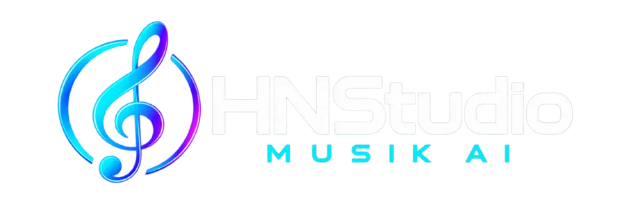

HNSTUDIO MUSIK AI v1.7 · x64
Phần mềm được tạo bởi Hoài Nguyễn Studio
HNSTUDIO MUSIK AI là phần mềm hát live chuyên nghiệp, giúp bạn có thể tải về và sự dụng một cách đơn giản mà không phải cài đặt phức tạp. giúp bạn có trải nghiệm khi live và hát hò một cách tốt nhất.
MIC VOCAL · DSP INSERT CHAIN
MIC → DSP / VST3 → VANG / DELAY → MASTERMUSIC → MUSIC VOLUME → MASTER Nhạc đi riêng, không qua FX / VST3 của mic.
LIVE SOUNDS
∿ REALTIME OSCILLOSCOPE
● MIC PROCESSED● MUSIC DRY● MASTER MIX
♫ MUSIC BUS
DRY · NO VOCAL FXMUSIC INPUT−∞ dB
✦ AUTO VOCAL
Đo giọng hát 6 giây và cân chỉnh mic tự động.
RECORDING STUDIO
4 track · Beat + 3 Mic · WAV 24-bit · VST3
00:00.000
Import a beat, select a Mic track, then Record. Headphones are recommended.
TRACK / MIX
Drag a clip to move it. Stop playback to edit or load FX. Mic is recorded dry; each track has independent effects. Timeline playback temporarily replaces live system music.
R arms a track. M mutes it. Space: play/stop · R: record · S: split · Delete: remove clip · Home: start · 1–4: arm track. Drag clips between tracks.